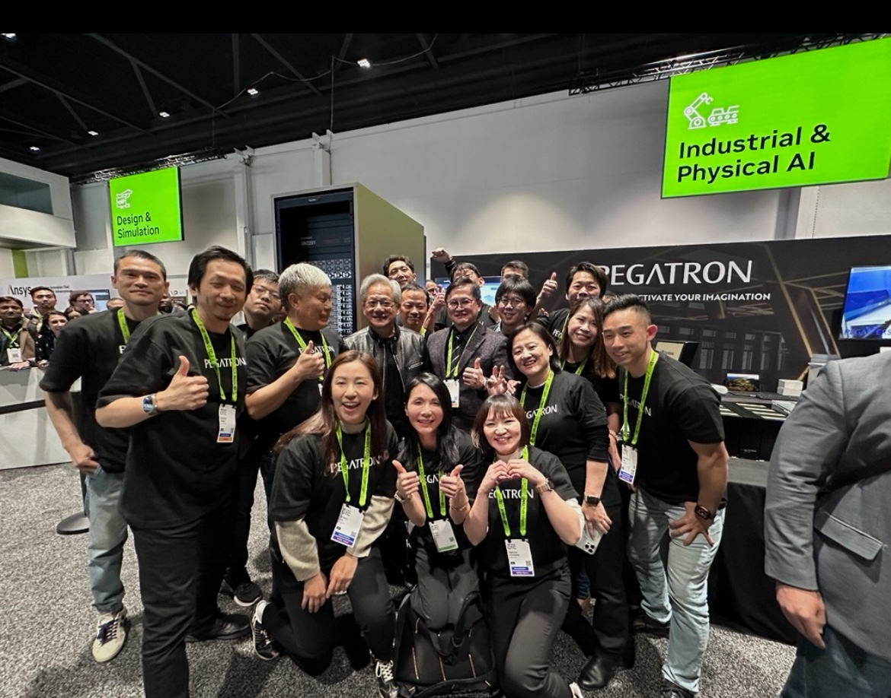
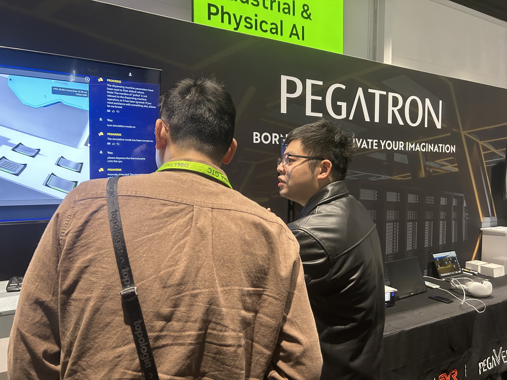
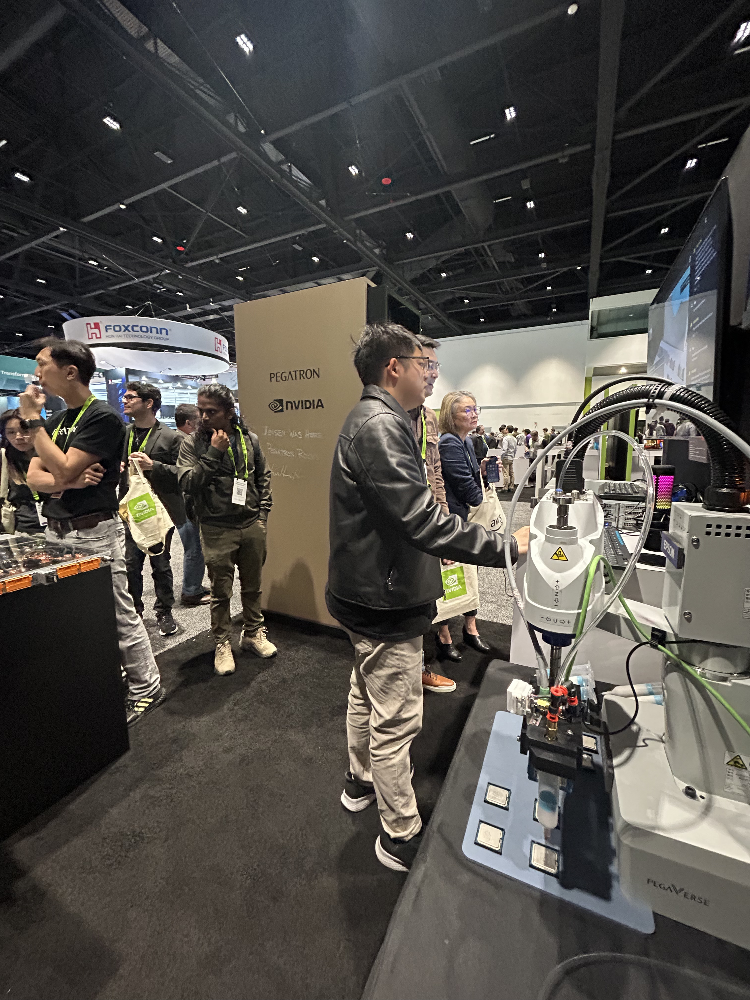
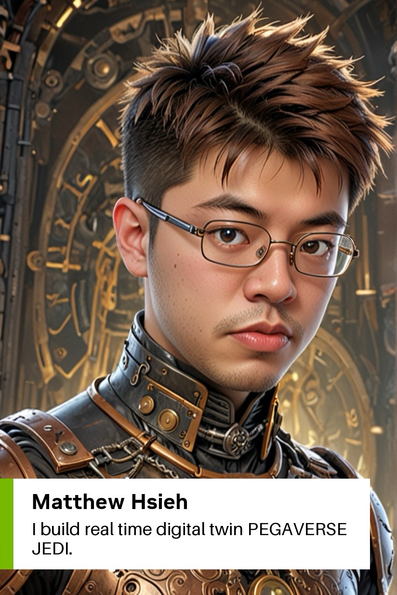
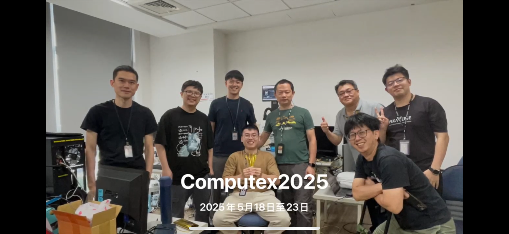
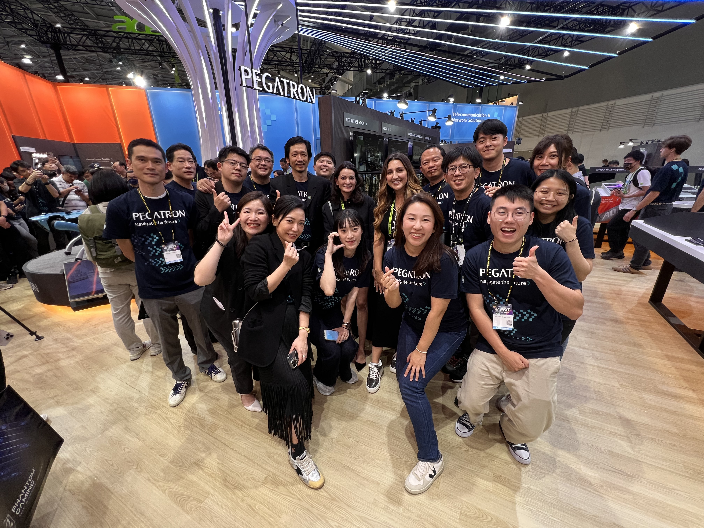

Professional Experience
Physical AI & Digital Twin at Pegatron
0-to-1 engineering, customer delivery, productization and factory adoption.
2024 - Present
Senior Engineer — Physical AI / Digital Twin
Pegatron Corporation
Taiwan & United StatesBuild and deploy industrial Digital Twin and robotics solutions using NVIDIA Omniverse / Isaac Sim, serving across hands-on development, solution integration, customer delivery and production deployment.
0-to-1 Primary Owner & Developer
Owned the first-generation Physical AI / Digital Twin platform across simulation, UI, third-party software, robot integration and deployment, before later development was expanded to additional team members.
Digital Twin DRI for U.S. Customer Program
Owned Digital Twin delivery across four production stations—Pick-and-Place, Screw, Press and robotic dispensing—working directly with customer engineers on requirements, technical decisions, debugging and validation.
Two Six-Week Onsite Deployments
Acted as the primary Digital Twin technical owner during 12 total weeks of U.S. onsite support, resolving cross-team integration issues and delivering new features required for acceptance.
Validation Tied to Commercial Milestones
Successful customer validation after onsite engagements enabled major commercial milestones, connecting engineering delivery directly with project execution and business outcomes.
Customer Enablement & Scale-Out
Established deployment workflows and transferred technical knowledge so customer engineers could independently extend Digital Twin deployment beyond the initial four stations.
Productization & Internal Factory Adoption
Supported evolution of the original solution toward a reusable product platform and currently contributes to Digital Twin optimization PoCs across two internal Pegatron production lines.
NVIDIA GTC & COMPUTEX 2025
Representing the project from technical demonstration to commercial productization.
Technical Demonstration
NVIDIA GTC 2025
March 2025 • San Jose, CA
GTC Highlights

PEGAVERSE JEDI
Technical Display
GTC 2025Primary Platform Owner on the Exhibition Floor
Demonstrated the first-generation system in person, explaining the engineering architecture and industrial use cases to external technical audiences. The project later appeared in NVIDIA public customer and keynote content.
NVIDIA Omniverse
Isaac Sim
Physical AI
Product Evolution
COMPUTEX 2025
May 2025 • Taipei, Taiwan




From Demonstration to Reusable Product
Represented the platform as it evolved from an exhibition prototype into a reusable customer solution, with follow-on engagement from the U.S. program and growing interest from manufacturing organizations in Taiwan.
Productization
Customer Adoption
Manufacturing AI